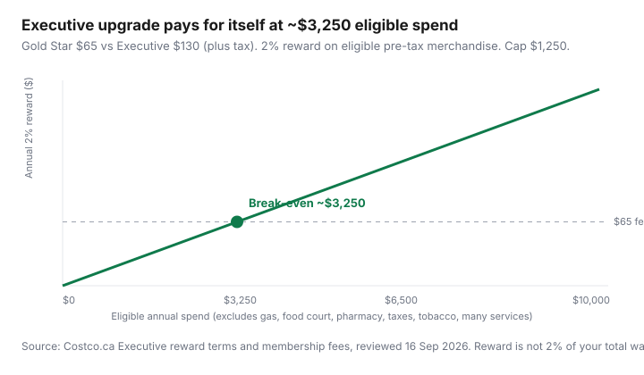

Food & Groceries · Canada
Costco Canada Executive vs Gold Star: exact break-even math (and exclusions)
Members upgrade for the “2%” headline without checking what 2% is of. It is not 2% of the visit that included gas, a hot dog, a pharmacy pickup, and tax. It is approximately 2% of eligible pre-tax merchandise through the front-end registers and Costco.ca, capped, with a trailing three-month quirk around renewal.
This is Canadian Costco math: Gold Star versus Executive, the ~$3,250 eligible-spend rule of thumb, exclusions, proration, and why the CIBC Costco Mastercard is a different pile of money.
Disclosure: Costco Executive memberships and the CIBC Costco (Anywhere) Mastercard are offer types. Saving Optimizer may earn a commission if we later add partner links. We do not currently claim a partnership with Costco or CIBC. Join or upgrade only after you run your eligible spend.
Key takeaways
- Fee gap is $65 (Gold Star $65 vs Executive $130, plus tax — Costco Canada public figures reviewed 16 Sep 2026).
- 2% × $3,250 eligible spend ≈ $65. That is the upgrade break-even, not the break-even on the whole $130.
- Gas, food court, pharmacy, many services, tobacco, taxes, and fees are out.
- Track three months of eligible spend before you upgrade. Mid-year upgrades are prorated.
- The CIBC Costco Mastercard cash back is separate and usually 1% in-warehouse. Do not double-count.
Fee difference and 2% reward basics
Costco Canada’s public membership materials (reviewed Sep 2026) price Gold Star at $65 and Executive at $130 for a 12-month period, each with a household card. Executive is the Gold Star (or Business) fee plus a $65 upgrade. Both include the satisfaction-style membership guarantee with limitations — read the counter copy.
The Executive reward is described as approximately 2% of pre-tax eligible merchandise, issued as a Costco shop card / reward around renewal, capped at $1,250 per 12-month period. You generally need to be a member in good standing to redeem. This is not U.S. Executive cash-back folklore; use Costco.ca terms for Canada.
The ~$3,250 eligible spend rule of thumb
Upgrade cost = $65. $65 ÷ 0.02 = $3,250 of eligible spend. That is about $271 per month of merchandise that actually qualifies — not $271 of “we went to Costco.”
If you want the 2% to cover the entire $130 Executive fee, you need about $6,500 eligible. That is a different question (“is Costco cheaper than my discounter on a full basket?”) mixed with membership. Keep them separate. Gold Star can already be “worth it” on diapers and olive oil alone; Executive is only the extra $65.

| Eligible annual spend | 2% reward | Net vs paying $65 Gold Star |
|---|---|---|
| $1,200 | $24 | −$41 |
| $2,400 | $48 | −$17 |
| $3,250 | $65 | $0 (break-even) |
| $6,000 | $120 | +$55 |
| $12,000 | $240 | +$175 |
What does not earn the Executive reward
Costco Canada’s Executive reward page (reviewed 16 Sep 2026) excludes, among other items:
- Cigarettes and other tobacco-related products
- Purchases not through front-end registers: gas, food court, pharmacy, and optical in Quebec
- Membership fees
- Deposits, miscellaneous fees, and taxes (including GST/HST)
- Services (auto and others)
- Purchases prohibited by regulation, and other categories Costco may name
- Purchases by anyone other than the primary and household cardholders
If your “$400 Costco month” is $180 gas, $20 food court, $40 pharmacy, $25 tax, and $135 groceries, Executive sees something like $135, not $400. Community threads that quote $3,250 without this list are how people upgrade by accident.
Timing quirk: Costco calculates roughly from enrolment/upgrade through about three months before renewal; the last three months roll into the next year. Do not panic-spend in month 11 to “hit 2%” without reading that paragraph on Costco.ca.
Upgrade timing and mid-year proration notes
Costco states that an upgrade from Gold Star or Business is prorated for months remaining. That is fair and also a reason not to upgrade in month 11 of a low-spend year. Upgrade when you have evidence, not when a membership clerk is friendly.
Tracking eligible spend for 3 months before upgrading
- Keep receipts or Costco.ca order history for 12 weeks.
- Subtract gas, food court, pharmacy, optical (QC), services, tobacco, and tax.
- Multiply the 12-week eligible total by four. That is your rough annual run-rate.
- If it is comfortably above $3,250 — and you will keep buying those SKUs — upgrade. If it is $2,000 of Kirkland nuts you will not finish, stay Gold Star.
- Revisit after a job change, a kid leaving home, or a warehouse closing nearby.
Executive + Costco Anywhere Visa stacking caveats
In Canada the warehouse card is the CIBC Costco Mastercard (sometimes still called “Anywhere” in conversation). Costco warehouses do not take Visa or American Express. The card’s in-warehouse earn is typically 1% on “all other purchases including at Costco,” with higher rates on Costco gas (often 3%), restaurants (3%), and Costco.ca (2% on a first-dollar cap — CIBC has used $8,000 in public pages). Those rewards pay as a CIBC cash-back gift certificate, usually in January, separate from Executive.
Stacking, labelled estimate: $5,000 eligible warehouse food and household goods → ~$100 Executive + ~$50 card = ~$150, minus the $65 upgrade if you compare to Gold Star. Gas $2,000 might earn card cash back but not Executive 2%. Grocery category cards (Cobalt, Momentum, PC World Elite) usually do not see Costco as grocery; they see a warehouse club. Details in the grocery card guide.
Downgrade path if spend drops
If a household member moves out or you shift staples back to No Frills, downgrade rather than “hope the 2% still works.” Costco’s conditions say members who downgrade or cancel with a fee refund will not receive the Executive reward. Time a downgrade after you redeem, not the week before the shop card would have printed. When in doubt, ask membership to show the date math on the screen.
Costco is a monthly bulk run in a healthy family grocery rhythm, not a weekly personality. Executive is a thin overlay on that run.
Sources & date stamps
- Costco.ca, Executive 2% Reward terms and membership conditions (reviewed 16 Sep 2026): exclusions, $1,250 cap, proration, downgrade/reward forfeiture.
- Costco customer-service membership comparison: Gold Star $65, Executive $130 (plus tax).
- CIBC Costco Mastercard public earn schedule (gas / Costco.ca / in-warehouse) — confirm on cibc.com before applying.
Frequently asked questions
How much are Costco Canada memberships?
Public Costco Canada materials list Gold Star at $65 per year and Executive at $130 per year (plus applicable tax), with Executive described as the $65 membership plus a $65 upgrade. Confirm at Costco.ca or the membership counter — fees can change.
What spend makes Executive worth it in Canada?
The upgrade costs $65 more. A 2% reward on eligible pre-tax merchandise needs about $3,250 of eligible spend to return $65. Gas, food court, pharmacy, many services, tobacco, taxes, and membership fees do not count.
Does Costco gas earn the Executive 2%?
No. Costco Canada’s Executive reward terms exclude purchases not recorded through front-end registers, including gas stations, food courts, pharmacies, and (in Quebec) optical centres.
Can I downgrade from Executive?
Yes. Costco’s terms describe downgrade and satisfaction-guarantee paths. If you downgrade or cancel and take a membership-fee refund, you typically forfeit the Executive reward. Read the current membership conditions before you change status.
Does the CIBC Costco Mastercard stack with Executive?
They are separate. The card’s cash back (CIBC gift certificate) is not the Executive 2%. In-warehouse merchandise often earns 1% on the no-fee Costco Mastercard, and Costco does not take Visa or Amex at the warehouse. Grocery-bonus cards usually do not code Costco as grocery.